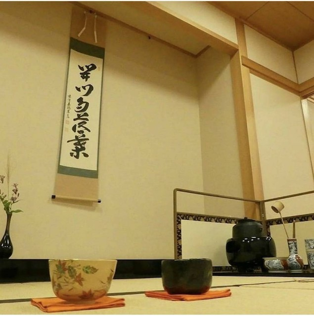

英語会(E.S.S)
私達英語会は英語力向上を目的とした活動を日々行っています！お互い切磋琢磨しながら大会に出たり、大会の運営に携わることもあります！
【活動日時】 平日（昼休み）
【活動場所】 E棟313教室
【部費】 半期6000円
【兼部】 要相談ですが、兼部は可能です。
演劇研究会

はじめまして、演劇研究会です。私たちは月曜日と金曜日の放課後週2回、雄飛祭公演などの本番に向けて日々練習を行なっています。大学から演劇を始めた部員も数多くいる中で、演出・役者・音響・照明などに分かれ、一から部員だけで作品を創り上げていきます。公演を成功させた時の達成感は素晴らしいです。公演情報などは演劇研究会のTwitterアカウントなどで発信していますので、ぜひのぞいてみてください。
【活動日時】月・金（4限後）※公演練習期間は練習日が増える可能性有り
【活動場所】 E棟教室・小講堂
【部費】 入会費（2000円）＋半期（4000円）
【兼部】 活動に支障をきたさない範囲で可
管弦楽部
個性豊かなメンバーで奏でるオーケストラのハーモニー♪
私たち管弦楽部は個性豊かな66名のメンバーで仲良く、楽しく活動しています。主な活動は、年に２回開催している定期演奏会と春・夏に行う合宿です。定期演奏会では、プログラムのメインと呼ばれる交響曲を中心とした全３曲に取り組みます。一つの曲を完成させるのは簡単なことではありませんが、プロの演奏家の方にレッスンして頂いたり部員同士で切磋琢磨し合ったりして、半年間練習を重ねて演奏会の成功を目指します。
春と夏の合宿では演奏会に向けての練習はもちろんですが、「期オケ」といって学年ごとに分かれて演奏したり、少人数のグループでアンサンブルをしたり、有志で集まって吹奏楽を披露したり、普段とは違う形での音楽も楽しむことができます。他にも秋の雄飛祭やミニコンサート等、一年を通して数々のイベントがあり、４年間で多くの思い出ができます。楽器を持っていなくても、部が所有する楽器があるので心配はいりません。初心者もいます！中には高校まで運動部に所属していて、全く楽譜が読めない！というところから始めた人もいます。“管弦楽”、“オーケストラ”と聞くとお堅いような、格式高いもののようなイメージを持たれる方もいるかもしれませんが、全くそんなことはありません！弾きたくなった、吹きたくなった、叩きたくなったら是非一度遊びに来てください！管弦楽部に入って私たちと一緒に充実した大学生活を送りましょう♪
【活動日時】 水（3限後 15：45～）土（13：30～）
【活動場所】 学生センター4階東雲ホール
【部費】 半期12000円 (月2000円）合宿費、演奏会代 別途
【兼部】 要相談
ハワイアンセクション(軽音楽部)
NO MUSIC、NO LIFE ！音楽って人生を豊かにすると思いませんか？ハワイアンセクションはセッションやライブ演奏などを通じて、音楽の自分なりの表現を見つけ出す場所です。60、70年代のブルースやオールディーズロックなどをメインに活動しており、自分は古い音楽が好きだけど周りに共感してくれる人がいない！という悩みを持っている方はぜひ一度遊びに来てください！。もちろん初心者でも大歓迎です！
【活動日時】 水（15：15～19：30） 土（12：30～19：30）
【活動場所】 E棟 509、510、511
【部費】 入部費 2000円 部費 月1000円
【兼部】 要相談
スインギンキャッツJ.O(軽音楽部)
私たちはビッグバンドという編成でジャズを演奏しています。ビッグバンドは主にドラム、ピアノ、ベースのリズム隊とサックス、トロンボーン、トランペットで構成されています。主な活動は年に数回あるジョイントコンサートと12月に行うリサイタルです。また１、２年生主体のジュニアバンドは二年前からステラジャムフェスティバルという大会に参加しています。３年生主体のレギュラーバンドは、山野ビッグバンド・ジャズ・コンテストという大会にも積極的に参加しています。真面目に音楽と向きあいながらもみんなで楽しく和気あいあいと活動しています。
【活動日時】 水（17:20～20:00） 土（13:00～16:00）
【活動場所】 35周年記念館 音楽練習室
【部費】 年間、約3万円の予定です。
【兼部】 要相談
国際親善倶楽部-DIAC-
国際親善倶楽部、通称DIACです🌏私たちは国際交流を目的とした文化会の部活ですが、今はコロナ禍の関係上、部員同士の交流がメインになっています！海外旅行が好きだったり、留学に行きたい人が集まっています！2021年度春学期には250人以上の新1,2年生に入部して頂きました！DIACで共通の趣味の友達が出来たり、先輩後輩関係なく話すことで、自分の趣味や関心を広げることも出来ます！また、自分の予定に合わせて活動に参加出来るので、入部しやすいのも特徴です🌈
【活動日時】 月・水 部活内でイベントがあるときは休日も活動
【活動場所】 月・水（4棟407教室） 休日は大学外など
【部費】 半期2000円
【兼部】 可
茶華道部

私たち茶華道部は茶道と華道、ふたつの伝統文化を扱う団体です。 茶華道部は、表千家の茶道を学ぶ「茶道班」、古流の華道を学ぶ「華道班」というふたつの班に分かれ、毎週水曜日に活動しています。茶道や華道の経験者はもちろんのこと、別の流派を学んでいた方や、未経験者の方も大歓迎です。入部するまで未経験だった部員も沢山いますよ！私たち茶華道部の特色は、和やかさと癒しだと思っています。真面目にお稽古に励みつつ、活動後には和気あいあいとお喋りをしています。茶道や華道というと、何だか堅く厳しい伝統文化を思い浮かべる方も多いかもしれませんが、決してそれだけではないのです。お茶やお花を通して心身を落ち着かせ、和のこころを育ててゆくことこそ、私たちの目指す茶華道部であり、この部活動の魅力でもあります。大学生活は新しい体験に満ちています。ぜひ、やりたいことを見つけて、挑戦してみてください。とは言うものの、やはり人には肩の力を抜いて休む時間が必要です。そんなとき、週に一回のペースでお抹茶を点てたり、お花を生けたりして心を入れ替えられる機会というのは良いものではありませんか。茶道と華道は、難しい所作や形を覚えることだけではありません。その内から、長い人生において必要なこころを得ることができるものだと、私たちは思います。興味を持っていただけたのなら、ぜひお気軽にお茶を飲みにいらしてください。
【活動日時】 水（3限後～18：00）
【活動場所】 学生センター3階 茶室 清心軒
【部費】 入部金 1500円
【部費】 月1000円
【兼部】 雄飛祭の参加に支障がなければ可
写真部
写真部では撮影会や展示会を中心に行っています。
カメラ経験者はもちろん、大学からカメラをはじめた部員も多くいます。
コロナ禍により活動は少なくなっていますが、コロナ以前の合宿では夜景・星空撮影なども行ってました。
【活動日時】 不定期（月一の撮影会あり）
【活動場所】 部室、または屋外（撮影会）
【部費】 年6000円
【兼部】 可
同時通訳研究会
同時通訳研究会では、「英語を楽しく身近に」また「他学科、他学年との交流」を目的に活動している部活です。主な活動は、昼休みの時間の英語学習活動（コロナの間はあまり実施しませんでした）や、部内や学内の英語を使ったスピーチコンテストの参加・運営、その他雄飛祭などの学内行事のへの参加です。英語を使用した活動を通して、学生同士の交流を深めることができます！
【活動日時】 平日（昼休み12：50～13：20）
【活動場所】 E棟524教室
【部費】 春学期2000円 秋学期1000円
【兼部】 可
モダンジャズ研究会
ジャズ研は少人数のジャズセッションを中心に活動しています。スイングやラテン、ファンクやボサノバなど幅広いジャンルの音楽に挑戦できるのもジャズ研の魅力です。楽譜が読めなくてもジャズは始められます！自分の思う音楽を奏でてみませんか？
【活動日時】 水曜日16:00~20:00/金曜日16:00~21:00
【活動場所】 水：E-303 / 金：Dスタ
【部員数】 22人
【部費】 半期3000円
【兼部の可否】 兼部可能
マンドリンクラブ
マンドリンとは、しずくの形をしたイタリア発祥の弦楽器で、弦をピックで弾いて音を鳴らします。私たちのクラブでは、マンドリンと、音域の違う派生楽器(マンドラ・テノール、マンドロンチェロ)、さらにクラッシックギターと、コントラバスを加えたオーケストラ編成で活動をしています！
【活動日時】 水・土（演奏会前は月も）
【活動場所】 学生センター（主に柊）
【部費】 半期7500円
【兼部】 可
環境・国際団体Deco

当団体では、川に捨てられた自転車を人力で引き揚げる「サルベージ」やペットボトルキャップ回収、置き傘を再利用してもらう「あまの傘」といったボランティア活動をメインに活動しています。また、水曜と金曜には部内の知識共有と向上を目的に発表を行うミーティングを行っています！
【活動日時】 月（4限後 17：30～） 木（昼休み 12：40～）
【活動場所】 E棟、草加市一帯、その他
【部費】 半期3000円
【兼部】 可
漫画研究会
私たち漫研は、漫画やアニメ・ゲームだけでなく、アイドルや創作キャラなど、あらゆるものが大好きな「オタク」が集まっている部です。主な活動内容としては、毎年夏冬に開催される「コミックマーケット」や「COMITIA」への出展、6月に学内で開催される「創造祭」、11月の「雄飛祭」など、学内外を問わず作品を発表しています。「コミックマーケット」や「COMITIA」では、部員が描く漫画やイラスト等を１冊にまとめて、部誌として出しています。今年は、学内での頒布もする予定です。また、学内外からの依頼でポスターなどのイラストを提供することもあります。普段の活動としては、テーマを２つ決めて、テーマに沿ってイラストを描き、発表し合う「テーマ絵発表」を行い、部員同士での画力や創作意欲の向上を図っています。さらに、夏と冬に行われる合宿、クリスマスなどの季節をテーマにしたイベントを企画し、部員同士の親睦を深めます。ハロウィンパーティーでは、コスプレをして楽しむ部員もいます。もちろん絵が描けない人でも大歓迎です！アナログ・デジタル問わず、様々な道具を使い、先輩たちが優しく丁寧に教えてくれます。漫画やイラストを描いてみたい人、人に語れるくらい大好きな趣味がある人、誰かと趣味を共有したい人、とりあえず友達が欲しい人は、ぜひ一度漫研に見学にお越し下さい！普段の活動場所はTwitterにてお知らせしています。皆さんのご来訪を心よりお待ちしています。
【活動日時】 水（3限後）金（4限後）
【活動場所】 E棟教室など
【部費】 半期1500円
【兼部】 可
DNS 被服研究会
被服研究会は、毎年行われる雄飛祭のファッションショーを目標に洋服を製作する部活です。単純に自分の好きな洋服を作るのではなく、その年のテーマに合わせてデザイン・製作・当日のメイクアップまで全て行います。テーマからしっかりと練り上げ、部活全体で１つの大きな作品を作り上げます。今年はコロナの影響で中々集まりにくいことを考慮し、作品撮りという形で活動をしました。テーマに合わせそれぞれの個性を活かしながら統一感のある作品を製作することが、我々の部活の活動です。
【活動日時】 水（3限後～18：00)
【活動場所】 学生センター6階609号室
【部費】 年3000円
【兼部】 可
映画研究会
基本活動は毎週水曜15：30から行っています。上映会では選出された代表者がテーマを考えそれに合った映画を3つ選び、プレゼンして投票で決まった作品を視聴します。この上映会で見た映画から良いところを学び映画製作に生かしています。
上映会後、食事会にて鑑賞した映画の批評を語り合います。
【活動日時】水（3限後）
【活動場所】E棟・4棟・部室etc.
【部員数】47名
【部費】半期2500円
【兼部】 可
ロックセクション(軽音楽部)
この度はロックセクションに興味を持っていただきありがとうございます！少しですがロックセクションについてお話しようと思います。ロックセクションでは年に７回と他の団体よりも多くのライブを行っており、またロックだけでなくJ-pop、パンク、メタル、ロキノン、洋楽などジャンルを問わず、様々な音楽をライブで演奏をすることができます！去年演奏したバンドを挙げると、ONE OK ROCKやSilent Siren、ELLEGARDENなどまだまだ数えきれない色々なバンドをやっています！このジャンルの音楽はできないかも…という心配はまったく必要ありません！！ロックセクションでは毎ライブごとに部員同士でバンドを組むので部員全員と仲良くなれます！団結力があるのでライブがとても盛り上がります！新入生が最初に出演するライブの新歓セッションでは、１年生が好きな曲を先輩達と演奏する事が出来ます！優しい先輩ばかりなので安心してください！の部活は軽音に少しでも興味がある人、楽器をこれから始めたいと思っている人、とにかくバンドをやりたい人、ライブ運営に興味がある人、同じ趣味の仲間と学校生活を過ごしたい人、そしてなによりロックセクションに興味を持ってくれた人、男女問わず誰でも大歓迎です！
【活動日時】 月・水・土（7：30～21：00） ＊水はお昼休みに部会があります！
【活動場所】 学生センタースタジオ
【部費】 半期4000円
【兼部】 兼部、兼サーは原則禁止 ※一部例外有り（要相談！）
企業経営研究会
私たち企業経営研究会は2016年度に立て直した文化会所属団体です。普段は学生センター６階608号室を拠点として活動しております。部員が一時期０になり、活動が止まった団体ですが、実は50年以上も続いている何かすごい組織です。以前は企業訪問やマーケティング研究、日経STOCKリーグとよばれる株式学習コンテストに参加していたみたいです。現在は個々の企業研究やグループディスカッションを中心とした業界への理解を深める活動をしています。この他にもアンケート調査などビッグデータの研究など、知識は乏しいながらも手探りでやっていたり、「持ち込み企画」と称して個人個人で企画した活動を行ったりと自主性を大事にしております。企業経営研究会は「入ってるからには何かしらメリットを見つけて得をしよう」という謎のポリシーから成長してきました。それぞれスケジュールを鑑み、努力に見合っただけの経験と知識が身につく部活動をこれからも目指しています。４年間はあっという間です。「日常」から一歩踏み出しいつもと違う「新しい世界」に足を踏み入れてみませんか？企業研を「滑走路」にして誰よりも高く跳んじゃってください！
【活動日時】 木（昼休み 他）
【活動場所】 学生センター6階608号室
【部費】 なし
【兼部】 可
古典ギター部
古典ギター部では、『クラシックギター』という、とても歴史のある楽器を演奏します。クラシックギターは、これ1つでメロディーも伴奏も弾けてしまうとっても万能でクールな楽器です。演奏形態としてはソロ、重奏、合奏といった様々なパターンがあり、クラシック音楽からジブリまで幅広いジャンルの曲を取り扱っているので、自分の好きな曲をやっている部員もたくさんいます！また、今の部員のほとんどが初心者として入部しましたが、3か月もあれば一曲弾くことができます。さらに、プロの講師の方が毎月親切丁寧に教えてくださるので、めきめきと腕が上達していくのがわかります。部の雰囲気はとても和やかで、個性的な面々でゆるく楽しく活動中。夏には合宿（例年は新潟）で、雄飛祭、定期演奏会に向けて練習し、その頑張りを通して、部員同士絆が深まります。ギターに興味のある方、なにか大学に入ってから新しいことを始めてみたい方、一生の友達を作りたい方、そんな方はぜひともコテギで大学生活を充実させましょう！少しでも興味を持ったら、学生センター603号室、古典ギター部の部室に足を運んでみてください。また、どうぞお気軽にご連絡ください。
【活動日時】 水（15：00～18：00） 土（13：00～18：00）
【活動場所】 学生センター6階603
【部費】 年15000円
【兼部】 可（活動に支障がない範囲、要相談）
広告研究会
広告研究会は、「“好き”をカタチに。」というコンセプトのもとに、主に３つの班に分かれてそれぞれ活動しています。TwitterやブログなどのSNSやホームページの管理・更新、ファッションスナップを撮る広報班、動画作成をするムービー班、雑誌作成をするレクラメ班があります。レクラメ班が作成した新入生向けの雑誌『WILLKOMMEN』が学内に配布されており、活動や新入生に役立つ情報が詳しく書いてあるので、是非手に取ってみてください。広告研究会の最も大きな活動として、11月の雄飛祭にて行われる「ミス・ミスター獨協コンテスト」があります。候補者選びからコンテストの運営まで広告研究会が中心となって行います。それぞれ所属している班ごとに日頃の成果を存分に発表できる場でもあります。広告研究会は今年で56期になる歴史ある部活です。毎年OBOG会が行われており、様々な業界で活躍している卒業生の方々から将来についてのアドバイスなど色んな話を聞けます。多くのOBOGとの繋がりが出来ることは広告研究会の強みだと思います。少しでも興味のある方は、是非一度話を聞きにきてください。
【活動日時】 火（5、6限）
【活動場所】 E棟教室
【部費】 半期2000円
【兼部】 可
混声合唱部
私たちは獨協大学混声合唱部、獨混（どっこん）です！名前の通り混声合唱をメインとした部活で人数は少ないですが、和気あいあいと楽しく活動しています。活動としては週に３回、４限後からで、月に2・3回ほど外部の先生とピアニストをお呼びして行うレッスンがあります。昨年度は入学式、卒業式で校歌を歌わせていただいたり、地域の商業施設に呼んでいただきミニコンサートを開いたり、と多くの演奏する機会をいただき私たちの歌声を届けてきました。また、毎年行っている、メインイベントである定期演奏会、練習・親睦を目的とした合宿などほかにもイベントが盛りだくさんです!「合唱」と聞いて「お堅いイメージがあるなあ」とか「今からだと遅いかも」なんて思っているそこのあなた！私たちの部活ではポップス、ディズニー、宗教曲、外国語曲などいろいろな曲に触れることができます。部員みんなで歌いたい曲を考えるので自分のやりたい曲だって提案できちゃいます！そして初心者だって大丈夫！実際に大学から始めた部員や昔触れたけど久しぶりに合唱をやる部員も中にはいて、先生や先輩たちと一緒に練習を通してゆっくり合唱を知っていくことができるので心配なしです！週3回なので全部出る必要はなし！もちろん出てくれるととても嬉しいですが兼部もOK、だから気軽に合唱に興味を持ってくれるといいなと思います。歌いたいという気持ち、歌が好きという気持ちがあればどなたでも大歓迎です。
【活動日時】 月・水・木
【活動場所】 月（スタジオＤ） 水（E棟515、516教室） 木（暁月ホール）
【部費】 半期5000円
【兼部】 可
将棋部
大学生活の趣味として将棋を始めてみませんか？この部活では、将棋を全くやったことのない人やルールは知っているけどあまり将棋を指したことのない人、もちろん経験者も大歓迎です！また、最近ではプロ棋士が将棋を指しているところを動画サイトや現地に行って観戦したりする「観る将」というものもあります。別の視点からでも将棋を見ることができるのが今の将棋の世界になっています。ぜひ一度、ニコニコ動画などの生放送で対局を見てみてください。ただ対局者が将棋を指しているところを流しているだけでなく他のプロ棋士がその将棋の解説をしたり、棋士の食事の写真を載せるなど、個性的な面を持った放送になっており興味を惹かれる内容になっています。また最近では将棋ユーチューバーというものがあり、その中の一人がプロに挑戦していたりします。将棋は老若男女問わず楽しめるゲームでありとても奥の深いものになっています。風化することが無く誰でも一生楽しめるものであると思います。そんな将棋をこの大学生活で知って一生ものの趣味にまですることもできると思います。是非ここで始めてみましょう！部員一同お待ちしています！
【活動日時】 火・金（15：00～）
【活動場所】 学生センター606号室
【部費】 年1000円
【兼部】 可
商業英語部
私達は英語で、商業英語を意味するBuisiness English Communicationを省略して、BECと言うようにしています！概要ですが、BECは比較的新しい部活で今年で５年目になります。活動目標は英語＋αの力を身につけることです。英語＋αとは英語力を身につけることはもちろん、活動を通じて、ビジネススキルやコミュニケーション能力、チームビルディング、などの価値ある能力を身につけるということを意味しています。現在、BECには外国語学部で英語が得意な人もいれば、経済学部でビジネス方面に強い人などもおり、それぞれ独自の強みを持っています。この目標は、それぞれの強みを活かせるようなチームを作るため、英語を使いながら多方面の活動を積極的に行っているうちに、英語だけでない能力にも及んでいったという実際の経験に基づいています。次に、目標を達成するため、BECが行っている活動にフォーカスします。外部の活動を積極的に行っている一方、イベント事の無い時期は、英語のアウトプットの機会を増やすアクティビティを行っています。アクティビティは部員全員が担当として回していき、効果的なアウトプットを楽しみながらできる活動になっています！今後も、新入生、在学生問わず新たなメンバーを迎え楽しく活動していきたいと思っています。是非一度遊びに来てください！
書道研究会
わたしたちは週２回、展覧会に向けての作品制作や、イベント前には書道パフォーマンスの練習を主に行っています。作品制作では、批評会を開いて部員からの評価をもらうことで、自身の書の技術を高めることができます。書道パフォーマンスでは、主に学年混合のチームに分かれて活動します。構成、配色、使用曲、演出などなど…作品のすべてをチーム一丸となって作り上げるので、部員同士の交流をより深められます。大勢の観客の前で披露するのは緊張しますが、たくさんの歓声や拍手を頂けたときの達成感はたまりません！最近は学外でのパフォーマンスも盛んで、草加警察署との連携やホノルルフェスティバル出演など、幅広く積極的に活動しています！書道経験が全くないという人もご安心ください。未経験、小学校以来筆なんて持ってない…なんていう部員も多くいますが、それぞれ大活躍しています！もちろん、超上手な人もたくさんいますよ！様々な人がいるからこそ刺激があります。なにより楽しく書道ができます！！書研には個性的な部員がたくさんいるので、毎回とても楽しくていつも笑い声が響いています（笑）書道経験は全く問いません。楽しそうだなあ、また書道やりたいなあ、パフォーマンスやってみたいなあ。どんな理由でも構いません。少しでも書道研究会に興味がわいたなら、いつでも活動見学に来てください！部員一同、心よりお待ちしております！！
【活動日時】 水・金(３限後)
【活動場所】 部室（学生センター5階503号室、学生センター５階 共用スペース（楠・桜)
【部費】 半期5000円
【兼部】 可
社会福祉研究会
私たちは学内外を問わずボランティア活動に努める団体です。主な活動内容として、毎週水曜日の３限後に草加市にある氷川児童館に行って子どもたちと遊んだり児童館でのイベントの手伝いをしたり、学内で行われる日本赤十字社の献血活動の手伝いをしたりしています。それ以外にも市の社会福祉協議会やケアハウスなどからボランティアの依頼を受けて参加したりしています。部の活動への参加は義務ではありませんので、もし都合が悪くなって参加できないときがあっても休んで構いません。また活動内での交通費は部費から支給されますので、遠方のボランティアにも気兼ねなく参加できます。もし個人的に参加したいボランティア活動があったら、部長に相談してくだされば交通費を支給できるかもしれません。ボランティアに興味がある人、人の役に立ちたいと思っている人は学生センター５階の部室（507号室）まで遊びに来てください。新入生の皆さんの参加を待っています。
聖書研究会
聖書研究会とはその名の通り、キリスト教の教典である「聖書」を研究する会です！研究というよりは、聖書から学ぼうといった方が近いと思います。これどういう意味？といった疑問をみんなでディスカッションして、理解を深めていきます。聖書研究では、正解はないのでキリスト教的に考えなくちゃ！と思わなくて大丈夫です！聖書って実はめちゃくちゃすごくて、例えば「ジャイアントキリング」っていう言葉をご存じでしょうか？これはダビデという少年がゴリアテという大巨人を打ち倒した番狂わせが語源だと言われています。他にも、今現在でも使われる言葉にも聖書は大きく影響しています。そういった名場面などを取り上げての聖書研究もすることがあります。ぜひ聖書研究会に遊びに来てください！みなさんに出会えることを部員一同、心待ちにしています！
【活動日時】 火（4限後 変更あり）
【活動場所】 学生センター4階417号室
【部費】 なし
【兼部】 可
手話部
私たち手話部は毎週水曜日に活動しています。活動内容は手話の勉強！初心者から中級者まで楽しめ、勉強になるような活動をしています。また手話を使ったレクリエーションもしているので勉強だけではなく活動を通して部員と仲良くなれます！手話部の良いところは何ですか？と聞かれたら真っ先に思い浮かぶのが仲のよさです。部室があり空いている時間に集まってお話をしたり、活動後にご飯を食べに行ったり遊びに行ったりするので仲良くなれる機会がたくさんあります。手話部は未経験者大歓迎です！むしろ、今部活にいる部員のほぼ全員が大学から手話を初めて、会話ができるようになっています。手話に少しだけ興味があるけどやったことないから活動についていけるかな？と思っている方、安心してください。去年入部した一年生は全員手話未経験でしたが活動にもついていけてるし、会話もできるようになっています。また、ほかの言語とは違い、ベースが日本語なのでとても覚えやすくて、すぐに使えるし、由来などを知ると楽しくなります。経験者ももちろん大歓迎です！本気で手話を勉強したい人も、まったり自分のペースで勉強したい人も両方楽しめる部活です。友の会という、聾者と交流する集まりがあるのでより実用的な手話を学ぶこともできます。
【活動日時】 水（15：30～18：00）
【活動場所】 学生センター4階416号室、学生センター1階フリースペース・E棟教室
【部費】 半期500円
【兼部】 可
ドイツ語研究会
私たちドイツ語研会は、「ドイツについて知ろう」というコンセプトのもと、それぞれが自身の興味 に基づいて活動できるような部活です。「研究会」というと堅苦しいイメージを持たれるかもしれま せんが、そんなことはありません!個性的な部員がわきあいあいと楽しく活動しています。 主な活動としては、年度末にドイツ語圏についての冊子をつくって学内に置いたり、春の創造祭 や秋の雄飛祭へ出展をしています。他にも、ドイツと関連したイベントの参加やドイツ語での映画 鑑賞、ドイツ料理を作ったり、レストランに行ったり。また、ドイツ人の顧問の先生やドイツ語圏出 身の留学生とドイツ語や文化について質問や談笑できる時間をいただたりしています!ドイツ語 を勉強していないとダメということはありません。ドイツのカードゲーム・ボードゲームなども多数 用意があります。ドイツが好き!ドイツに興味がある!ドイツについて知りたい!という皆さんに オープンです。 例年10人前後で活動していた小さな部ではありますが、今回のコロナの影響で新入部員がな く、活動も滞ってしまいました。今年度は部員それぞれのアイデアに寄り添った活動をしていきた いです。 アットホームな雰囲気でお待ちしておりますので、少しでも興味のある方は、ぜひ学生センター の部室414まで足をお運びください。ドイツ研究会のアドレスへメール、TwitterのDMでもご質問等にお答えしますので、お気軽にどうぞ!それではみなさんとお会いできることを楽しみにしてい ています。
【主将/部長への質問】
①ドイツ語学科でなくても入部できますか?
ドイツのサッカー、料理などなんでも興味や、部活が楽しそうだと思ってくれた方、誰でも大歓迎 です!
②部としての目標は?
ドイツ語を勉強している、していないにかかわらずドイツ文化について知ることで、部員同士の 交流を深める場にすることです。
【QRコード】 2018年度 部誌
ドイツ語会話研究会
ドイツ語会話研究会の日々の活動は、火曜日のドイツ語レッスンと、水曜日の部会です。どちらも昼休みの時間帯に行なっています。ドイツ語レッスンは、ネイティブの先生と部員でドイツ語運用能力の向上を目指します。毎週異なったテーマについてドイツ語で意見を交わします。ドイツ語学習歴が短い部員はネイティブの先生が一から教えてくださるのでご心配なく！テーマに沿った定型文も習いつつ、部員同士助け合いながらレッスンを進めていきます。授業外でドイツ語を使う機会はなかなか貴重です。ともにドイツ語を学ぶことでモチベーションの向上にも繋がります。大きなイベントとしては雄飛祭と天野杯ドイツ語弁論大会があります。雄飛祭ではドイツ名物のカリーヴルストを毎年売っています。部員一丸となってお店を運営するのは楽しいですよ！そして天野杯ドイツ語弁論大会は、私たちが12月に主催するドイツ語の弁論大会です。今年度は第51回目の開催となります。大会は三部構成となっており、ドイツ語学習歴によって参加基準が設けられています。学外からも毎年参加者が来てくださり、良い交流の場ともなっています。部の仕事としては大会の構成を考えたり、企業に協賛をお願いしたり、大使館を訪問したり…とてもやりがいのある仕事です！
他にはドイツ関連のイベントに部員で出かけたりもします！ドイツに少しでも興味のある方なら学習歴や学部学科関係なく大歓迎です。お待ちしています！
【活動日時】 火・水（昼休み）
【活動場所】 部室、W棟ラーニングスクエア2
【部費】 年3000円
【兼部】 可
美術部
現在は大きく分けて絵画班と陶芸班の2つの班があります。部員は皆好きな時間に好きなだけアトリエや画材を使用することが可能です。年間を通しての主な活動は、毎週金曜日のデッサンと公募展への出品、個展の開催です。デッサンでは時間を決め、部員全員が同じモチーフを描きます。完成したデッサンはお互いに評価し合い、積極的な意見交換を行います。公募展は自身の作品を客観的に評価してもらう絶好の機会です。可能な限り全部員が年に一度は作品を出品してもらっています。個展は１年に3、4回の頻度で都内のギャラリーを借りて開催します。また、月に一度外部から講師の先生をお招きして、作品へのアドバイスもいただいています。その他に創造祭、雄飛祭での作品展示や似顔絵ブースの設置など、学内行事の際も楽しい活動がいっぱいです。長期休業を利用した合宿も計画しています。上達することはもちろんですが、私たちはそれ以上にアートを楽しむということを大切にしています。制作の自由度が非常に高いので、きっとやりたいことが見つかるはずです。こんな作品が作りたい、あの画材を使ってみたいといった希望にも、可能な限り対応させていただきます。大学入学後に絵を描き始めた部員も多いです。得意、不得意は関係なく、美術に興味関心のある方であれば経験の有無を問わずに楽しめる部活です。
【活動日時】 金（4限後）
【活動場所】 学生センター4階アトリエ
【部費】 年5000円
【兼部】 可
文芸部
文芸部は年に4回発行される部誌『獨協文学』の編集を中心に活動しています。『獨協文学』は部員の執筆した文学作品（小説／短歌／詩／エッセイ等）が収録された雑誌で、学内の数ヶ所に設置されたラックで無料配布されます。また、部誌の発行以外にも、文学限定の同人誌即売会『文学フリマ』への出展、他大学との合同誌『BROOM』への参加、作品の合評会や読書会、夏合宿などがあります.文芸部の活動の目的はやはり『獨協文学』の発行にあります。そのためには部員の執筆作品が不可欠です。もしかすると文芸部での執筆活動に興味を持っていただけた方々の中に「執筆経験はどの程度要求されるのだろうか」と懸念されている方もいるかもしれませんが、心配はありません。ほぼすべての部員に執筆経験などありませんでしたから。それ故、作品に求める水準など無く、完成したものは例外なく『獨協文学』に収録されます。これまで小説や短歌、エッセイなどの文学に興味のなかった方でも、これを機に新しい世界へ身を投じてみてはいかがでしょうか。
【活動日時】 金（4限後）
【活動場所】 学生センター4階アトリエ
【部費】 年5000円
【兼部】 可
放送研究会